A life-sim where every job is a puzzle.
Live on a floating island in space. Play well to earn gold, spend it on new looks, a home or your own ship, and make friends, or more, with islanders who remember you. The free Beta Demo is a sandbox with no ending.
- Free, name your price
- Windows, 421 MB
- Version 0.0.7-beta
- Godot 4.7
Play the trailerOne minute of alpha footage, with sound.
Every job is a game
Every job on the island, every table in the tavern, every station on the ship and every fight is its own mini-game. Point at one to see it played. How each one plays.
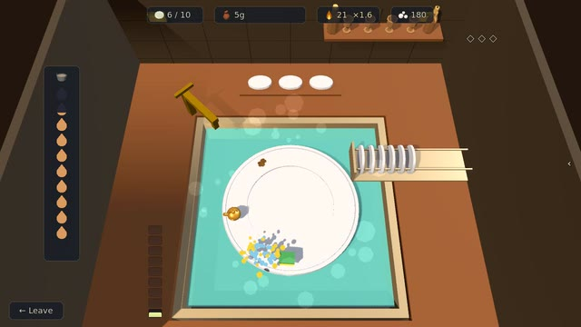
Dish DutyIsland job 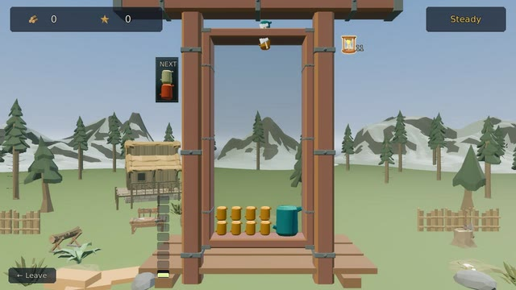
LumberjackingIsland job 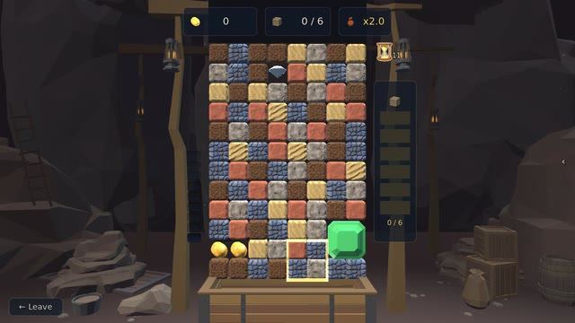
MiningIsland job 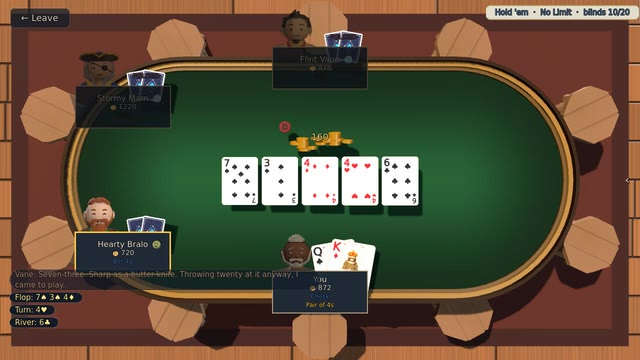
PokerTavern table 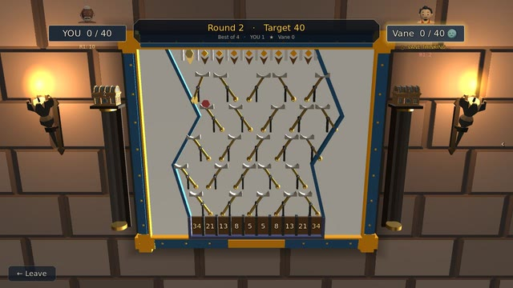
Coin DropTavern table 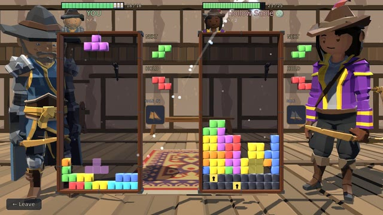
SkirmishFight 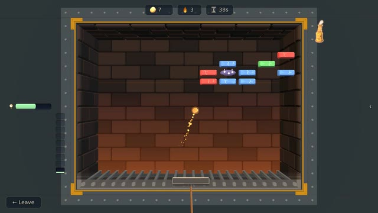
StokingShip station 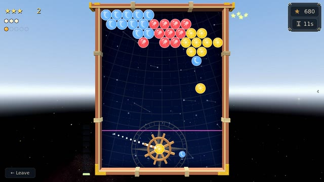
NavigationShip station 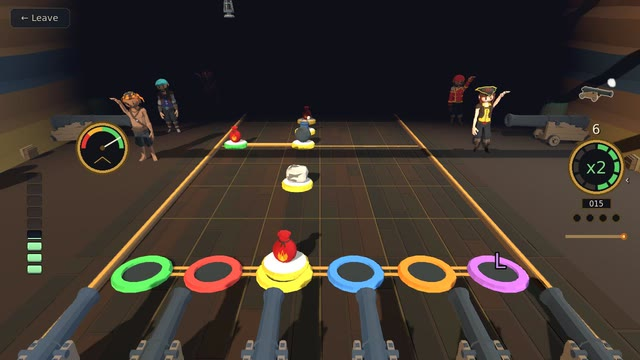
GunneryShip station 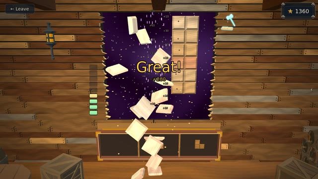
CarpentryShip station 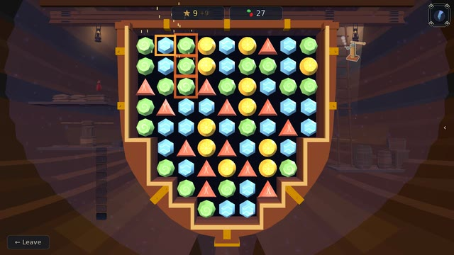
VentingShip station 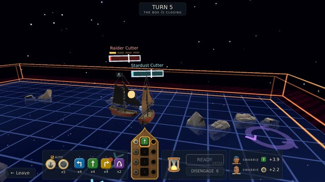
Space BattleFight
Arrive with nothing
You arrive on Cradle Rock with nothing. Take jobs that are each their own mini-game, play the inn's tables and climb the five-rung gym ladder. Then take to the sky, where every station aboard is another mini-game: sign on with the ferry's crew, or buy a ship and hire your own. Across the sky on Driftspar stands the Labyrinth, the first of the Ordeals, and its beasts wait one at a time. Buy a lot and the shipwright builds you a house of your own. None of it ends: keep playing for as long as you like. How each mini-game plays.
The ladder, then the Labyrinth
Five friendly bouts at the Cradle Gym, easiest first. Hollow Sable runs the ladder and Mossy Senna patches you up after. Beat them all and you are Gym Champion.
Then the Labyrinth's gate on Driftspar opens, across the sky. Five beasts, one at a time, up to the Labyrinth King. Lose, and you wake back at the Cradle Gym with the healer.

Hearties and rivals
Rapport runs from Despised to Confidant. Earn it and they act like it, in what they say and what they will do for you.
And if the feeling runs both ways, court them: fond, then smitten, then sweethearts.


The islanders have lives of their own
You can play the whole game without saying a word to anyone. Stop and talk anyway.
Ask Bralo what the word is tonight
He tells you about the room you are both standing in: who just won at Coin Drop, who is hiring at the forge, who has been spinning tall tales by the fire all evening.
Win at the gym, and the tavern already knows
Beat someone in a friendly bout at the Cradle Gym and by the time you walk into the inn the whole cast has heard. Lose, and that goes round too.
Ask anyone to walk with you
They weigh how much they like you, whether they are busy, and how far off you are. Then they fall in beside you, or tell you no and why.
Conversations need a live internet connection. Everything else in the game plays offline.
Screenshots
Every picture here is from version 2.0.5-alpha, and Stoking from 2.0.7-alpha. Click one to see it full size.
On the rock


At sea


Where it's going
-
Playable now
Cradle Rock and Driftspar
Cradle Rock, fully dressed: its jobs and tables to play, a cast who keep their own schedules and remember you, and the gym ladder. Then Driftspar, across the sky, and the Labyrinth, the first Ordeal.
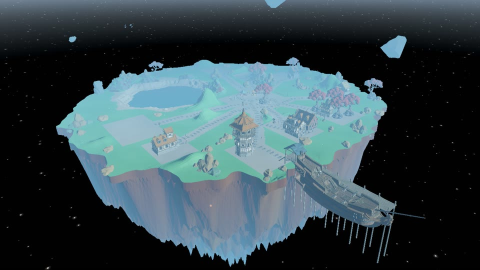
-
Playable now
A ship and a crew
Buy a hull at the sky dock, hire a crew and sail out. Every duty station that keeps her flying is a mini-game of its own, and a voyage can end in a battle in the sky and a boarding.
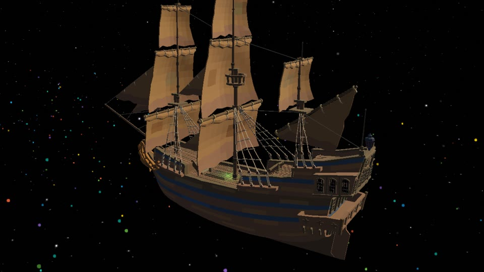
-
Playable now
A home of your own
Buy a lot, and the shipwright builds you a house to furnish as you like. Take someone you are sweet on home with you.
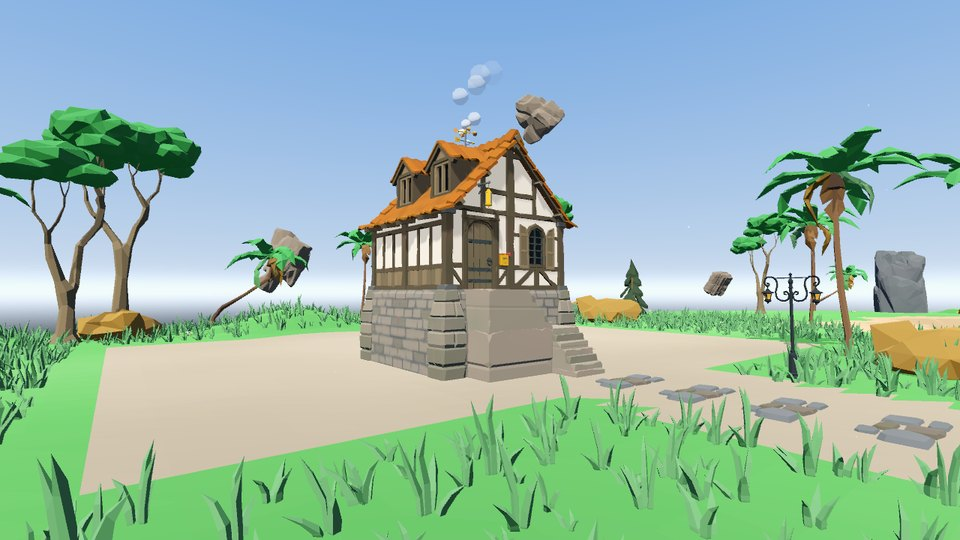
-
Planned
The Ordeals, and the secret island
Eight Ordeals, each on an island of its own, each with a master waiting at the end. Every one you beat gives you a bearing on an island nobody has charted.
-
Planned
More to play
The mini-games here are where it starts, not where it stops. More work to take on, more games on the tavern tables, and some that belong to one island and nowhere else. New ones keep coming rather than arriving once.
-
Planned
A sky full of islands
A whole chart of them, each one built by hand with its own cast and its own tables, scattered across the sky at their own heights. How far your ship can carry you is what opens the map up.
No dates on purpose. Art and audio are placeholder for now.
Questions
Is Shivaliva free?
Yes. The Beta Demo is free on itch.io for Windows, name your own price, no sign-up.
Does the demo end?
No. The Beta Demo is a sandbox. Your first crossing to Driftspar earns Off the Rock, and then you keep playing for as long as you like. The full game is a new journey of its own.
What kind of game is it?
A single-player life-sim where every job is a puzzle, on islands floating in space. The twelve mini-games are the island's jobs, the tavern's tables, the ship's duty stations and the fights: Dish Duty, Lumberjacking, Mining, Poker, Coin Drop, Skirmish, Stoking, Navigation, Gunnery, Carpentry, Venting and Space Battle.
Do I need an internet connection?
Only for conversations with the islanders. Everything else in the game plays offline.
Is it multiplayer?
No. Shivaliva is a full single-player experience.
Who makes it?
Trojan Bulldog, one person, building in public in Godot 4.7. The devlog is on itch and updates are posted on X as @trojanatoplat.
Credits
The game is one person's work. These are the things in it that are not, and the licences they are used under. The same credits ship with every download of the game.
Music
Epic Medieval Music Pack I by pegonthetrack & ELVGames. elv-games.itch.io
The gun deck’s songs, by Kevin MacLeod (incompetech.com): “Galway”, “Kings of Tara”, “Village Consort”, “Netherworld Shanty”, “Club Seamus”, “Thatched Villagers”, “Master of the Feast”, “Pippin the Hunchback”, “Celtic Impulse”, “Adventures in Adventureland”, “Fiddles McGinty” and “Minstrel Guild”. Licensed under Creative Commons: By Attribution 4.0 License (creativecommons.org/licenses/by/4.0).
Sound
Additional assets CC-BY 4.0 GDQuest. “Talking Synthesizer” by tcarisland, CC-BY-SA 4.0. Sci-Fi Sounds by Kenney, CC0. Keyboard soundpack 1 by unicaegames, CC0. Universal Sound Effects packs, licensed. Everything else is synthesised in-engine.
Voices
NPC voices are generated on your own machine, so nothing you say or hear is sent anywhere. Made with sherpa-onnx (Apache-2.0) using the Piper en_GB-vctk-medium voice model, trained on the CSTR VCTK Corpus (University of Edinburgh), CC-BY 4.0.
Art
3D models from the POLYGON packs by Synty Studios with motion capture from Microsoft Rocketbox (MIT, © 2020 Microsoft) and animations from Mixamo, used under their licences. Isometric character and tileset: additional assets CC-BY 4.0 GDQuest. Typeface: DejaVu Sans. Everything else is drawn for this game.
Engine
Godot Engine 4.7, MIT licence, © 2014-present Juan Linietsky, Ariel Manzur and the Godot Engine contributors.
Made by
Trojan Bulldog, solo, building in public. Built with the help of Claude (Anthropic).
Free on itch, for Windows
- Windows zip
- 421 MB
- Version 0.0.7-beta
- Name your own price
Trojan Bulldog. One person, building in public in Godot 4.7.